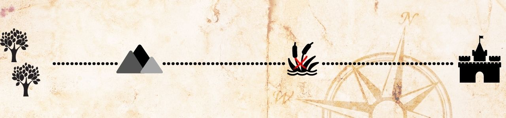

1– Matar o maior número de orcs para que os próximos grupos não tenham esse encontro?
2– Roubar as armas dos orcs, mas passar silenciosamente pelo grupo?

2– Roubar as armas dos orcs, mas passar silenciosamente pelo grupo?